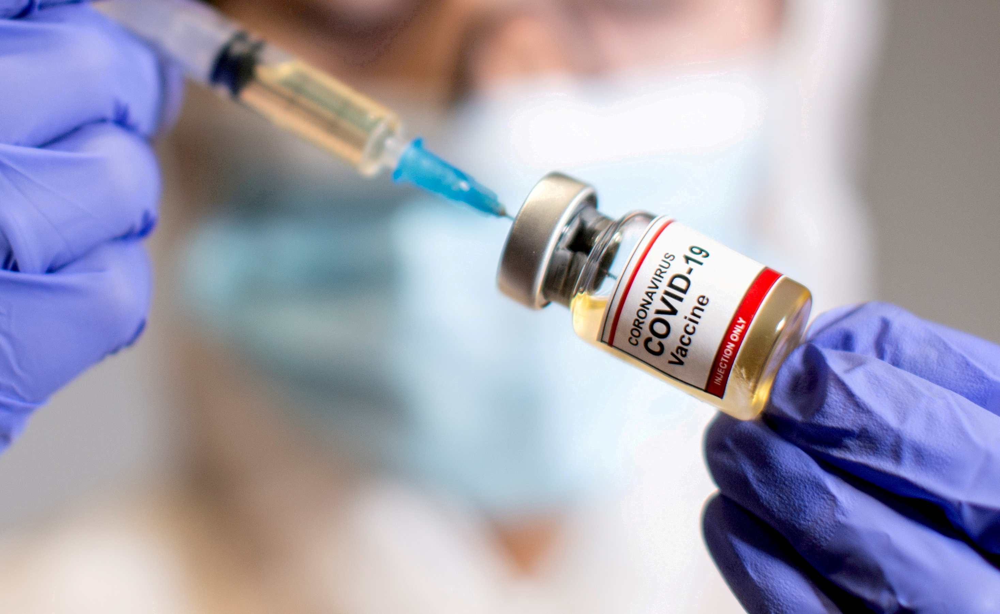

- Isolate yourself in a well ventilated room.
- Use a triple layer medical mask, discard mask after 8 hours of use or earlier if they become wet or visibly soiled. In the event of a caregiver entering the room, both caregiver and patient may consider using N 95 mask.
- Mask should be discarded only after disinfecting it with 1% Sodium Hypochlorite.
- Take rest and drink a lot of fluids to maintain adequate hydration.
- Follow respiratory etiquettes at all times.
- Frequent hand washing with soap and water for at least 40 seconds or clean with alcohol-based sanitizer.
- Don’t share personal items with other people in the household.
- Ensure cleaning of surfaces in the room that are touched often (tabletops, doorknobs, handles, etc.) with 1% hypochlorite solution.
- Monitor temperature daily.
- Monitor oxygen saturation with a pulse oximeter daily.
- Connect with the treating physician promptly if any deterioration of symptoms is noticed.
- Get vaccined if you are able to, but only after three months after recovery.
